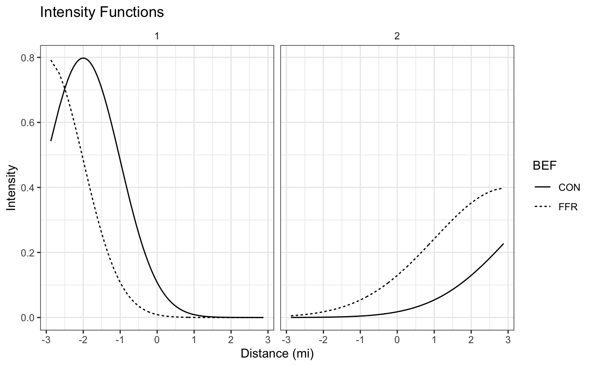

library(rndpp)
#> Loading required package: Rcpp
library(dplyr)
#>
#> Attaching package: 'dplyr'
#> The following objects are masked from 'package:stats':
#>
#> filter, lag
#> The following objects are masked from 'package:base':
#>
#> intersect, setdiff, setequal, union
library(ggplot2)
library(tidyr)Consider a situation in which

num_schools <- 50
schools_1 <- rnhpp(nsim = num_schools,
lambda = function(y) f_1(y),
interval = c(0,R),seed = 3431,
max =max(f_1(d))) %>% as_tibble() %>% mutate(Cluster = 1, BEF = "FFR")
schools_2 <- rnhpp(nsim = num_schools,
lambda = function(y) f_2(y),
interval = c(0,R),
seed = 3431,
max = max(f_2(d))) %>% as_tibble() %>% mutate(Cluster = 2, BEF = "FFR")
schools_3 <- rnhpp(nsim = num_schools,
lambda = function(y) f_11(y) ,
interval = c(0,R),
seed = 3431,
max = max(f_11(d))) %>% as_tibble() %>% mutate(Cluster = 1, BEF = "CON")
schools_4 <- rnhpp(nsim = num_schools,
lambda = function(y) f_22(y) ,
interval = c(0,R),
seed = 3431,
max = max(f_22(d))) %>% as_tibble() %>% mutate(Cluster = 2, BEF = "CON" )
pltdf <- bind_rows(schools_1,schools_2,schools_3,schools_4)
pltdf <- pltdf %>% rename(school_id = sim_id,
distances = event_times)
pltdf %>% ggplot(aes(x=distances,linetype=BEF)) + geom_density() + facet_wrap(~Cluster) +
theme_bw() + theme(strip.background = element_blank()) + xlab("Distance")